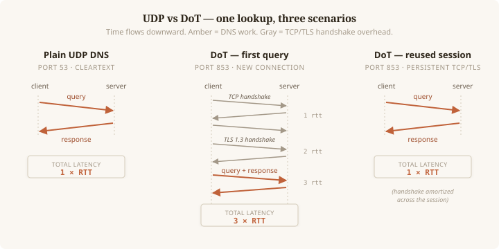
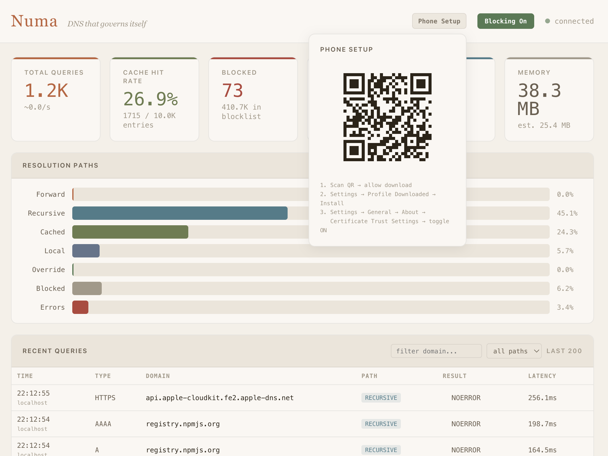

DNS-over-TLS from Scratch in Rust
The previous post ended with “DoT — the last encrypted transport we don’t support.” This post is about building it.
Numa now runs a DoT listener on port 853. My iPhone uses it as its
system resolver, so ad blocking, DNSSEC validation, and recursive
resolution follow my phone through the day. No cloud, no account, no
companion app — a self-signed cert, a .mobileconfig
profile, and a QR code in the terminal.
RFC 7858 is ten pages. The hard parts weren’t in the RFC. They were
in cross-protocol confusion defenses, a crypto-provider init gotcha that
only triggered in one specific config combination, and a certificate SAN
bug iOS was happy to accept and kdig immediately rejected.
This post is about those parts.
Why DoT when you already have DoH?
Numa has shipped DoH since v0.1. Both protocols tunnel DNS over TLS; DoH wraps queries in HTTP/2, DoT is DNS-over-TCP with TLS in front. Same privacy guarantees, different wrapper.
The answer to “why both” is that phones ask for DoT by name. iOS system DNS configures it with two fields (IP + server name) instead of a URL template. Android 9+ “Private DNS” speaks DoT natively. Linux stubs default to DoT. I wanted my phone on Numa without installing anything on the phone itself, and DoT is the protocol iOS and Android already speak for that.
The wire format is refreshingly small
RFC 7858 is one sentence of wire protocol: DNS-over-TCP (RFC 1035 §4.2.2) with TLS in front, on port 853. DNS-over-TCP has existed since 1987 — a 2-byte length prefix followed by the DNS message. DoT is that, wrapped in a TLS session. The entire framing code is seven lines:
async fn write_framed<S>(stream: &mut S, msg: &[u8]) -> io::Result<()>
where S: AsyncWriteExt + Unpin {
let mut out = Vec::with_capacity(2 + msg.len());
out.extend_from_slice(&(msg.len() as u16).to_be_bytes());
out.extend_from_slice(msg);
stream.write_all(&out).await?;
stream.flush().await
}Reads are symmetric: read_exact two bytes, convert to
u16, read_exact that many bytes. No HTTP
headers, no chunked encoding, no framing layer.
Persistent connections
A fresh TCP+TLS handshake is at least 3 RTTs — about 300ms on a 100ms connection, 60× the cost of a UDP query. RFC 7858 §3.4 says clients SHOULD reuse the TCP connection for multiple queries, and every real DoT client does: iOS, Android, systemd, stubby. A single connection often carries hundreds of queries.

The amortization point is the whole game. If you only ever do one query per connection, DoT is roughly 3× slower than UDP and you should not use it. If you reuse the same TLS session for a browsing session’s worth of queries, the handshake is paid once and every subsequent query is effectively free.
The server is a loop that reads a length-prefixed message, resolves it, writes the response framed the same way, waits for the next one. Three timeouts keep it honest:
- Handshake timeout (10s) — a slowloris that opens TCP but never sends a ClientHello can’t pin a worker.
- Idle timeout (30s) — a connected client with nothing to say gets dropped.
- Write timeout (10s) — a stalled reader can’t hold a response buffer indefinitely.
A semaphore caps concurrent connections at 512 so a burst of handshakes can’t exhaust the tokio runtime.
ALPN, the cross-protocol defense that matters
If DoT lives on port 853 and HTTPS on 443, what stops an HTTP/2
client from hitting 853 and getting confused replies? Cross-protocol attacks exist and
have had real CVEs. The defense is ALPN: during the TLS handshake the
client advertises protocols, the server picks one it supports or fails.
A DoT server advertises "dot"; a client offering only
"h2" gets a no_application_protocol fatal
alert before any frames are exchanged.
rustls enforces this by default when you set
alpn_protocols:
let mut config = ServerConfig::builder()
.with_no_client_auth()
.with_single_cert(certs, key)?;
config.alpn_protocols = vec![b"dot".to_vec()];“The library enforces it by default” has a latent risk: a future rustls upgrade could change the default, and the defense would quietly evaporate. I wrote a test that pins the behavior so any regression in a dependency update fails loudly:
#[tokio::test]
async fn dot_rejects_non_dot_alpn() {
let (addr, cert_der) = spawn_dot_server().await;
let client_config = dot_client(&cert_der, vec![b"h2".to_vec()]);
let connector = tokio_rustls::TlsConnector::from(client_config);
let tcp = tokio::net::TcpStream::connect(addr).await.unwrap();
let result = connector
.connect(ServerName::try_from("numa.numa").unwrap(), tcp)
.await;
assert!(result.is_err(),
"DoT server must reject ALPN that doesn't include \"dot\"");
}When you’re leaning on a library’s default for a security-critical invariant, the test is the contract.
Two bugs that hid for days
Both were fixed before v0.10 shipped. Both stayed hidden because my initial tests used permissive clients.
The rustls crypto provider panic
rustls 0.23 requires a CryptoProvider installed before
you can build a ServerConfig. Numa’s HTTPS proxy calls
install_default as a side effect when it builds its own
config, so DoT “just worked” for users who enabled both — the proxy had
already initialized the provider before DoT’s first handshake.
Then I added support for user-provided DoT certificates. Someone running DoT with their own Let’s Encrypt cert, with the HTTPS proxy disabled, would hit:
thread 'dot' panicked at rustls-0.23.25/src/crypto/mod.rs:185:14:
no process-level CryptoProvider available -- call
CryptoProvider::install_default() before this pointThe panic happened on the first client connection, not at startup.
While writing the integration suite for “DoT with BYO cert, proxy
disabled” — the one combination nobody had ever actually exercised — the
first run panicked. Fix is two lines: call install_default
inside load_tls_config so DoT can stand alone. If a side
effect initializes something and you have a path that skips that side
effect, you have a bug waiting for a specific deployment.
The SAN bug iOS was happy to accept
Numa’s self-signed DoT cert is generated on first run from a local CA
alongside the data directory. It needs to match whatever
ServerName the client sends as SNI. For the HTTPS proxy,
that’s the wildcard domain pattern *.numa (matching
frontend.numa, api.numa, etc.). I initially
reused the same SAN list for DoT: a wildcard *.numa and
nothing else.
On an iPhone this worked perfectly. Full browsing session, persistent
connections in the log, ad blocking active. I was about to merge when I
ran one last smoke test with kdig (GnuTLS-backed, from Knot DNS):
$ kdig @192.168.1.16 -p 853 +tls \
+tls-ca=/usr/local/var/numa/ca.pem \
+tls-hostname=numa.numa example.com A
;; TLS, handshake failed (Error in the certificate.)Huh.
RFC
6125 §6.4.3: a wildcard in a certificate’s DNS-ID matches exactly
one label. *.numa matches frontend.numa, but
not numa.numa, because the wildcard wants at least one
label to substitute and strict clients reject wildcards in the leftmost
label under single-label TLDs as ambiguous.
iOS’s TLS stack is lenient and accepts it. GnuTLS, NSS (Firefox), and
most non-Apple validators don’t. The fix is five lines — add an explicit
numa.numa SAN alongside the wildcard. But the lesson is the
one that stuck: I wrote a commit message saying “fix an iOS bug” and had
to rewrite it, because iOS was fine. The real bug was that every
GnuTLS/NSS-based client on the planet would have rejected the cert, and
I only found it by running one more test with a stricter tool.
Test with the strict client. The permissive client hides your bugs.
Getting your phone onto it
A DoT server is useless without a way to point a phone at it. iOS
won’t let you type an IP and a server name into Settings directly — you
install a .mobileconfig profile that bundles the CA as a
trust anchor and the DNS settings in a single payload.
Numa ships a subcommand that builds one on the fly and serves it over a QR code in the terminal:
$ numa setup-phone
Numa Phone Setup
Profile URL: http://192.168.1.10:8765/mobileconfig
██████████████████████████████
██ ██
██ [QR code rendered in ██
██ your terminal] ██
██ ██
██████████████████████████████
On your iPhone:
1. Open Camera, point at the QR code, tap the yellow banner
2. Allow the download when Safari asks
3. Open Settings — tap "Profile Downloaded" near the top
(or: Settings → General → VPN & Device Management → Numa DNS)
4. Tap Install (top right), enter passcode, Install again
5. Settings → General → About → Certificate Trust Settings
Toggle ON "Numa Local CA" — required for DoT to workThe same QR is available in the dashboard — click “Phone Setup” in the header and the popover renders an SVG QR code pointing at the mobileconfig URL. On mobile viewports it shows a direct download link instead.

Step 4 is non-negotiable. Even though the CA is bundled in the same profile that installs the DNS settings, iOS still requires the user to explicitly toggle trust in Certificate Trust Settings. It’s a deliberate iOS policy to prevent profile-based trust injection — annoying, and correct.
I’ve been dogfooding this since v0.10 shipped in early April. The
phone resolves through Numa over DoT whenever I’m home; persistent
connections are visible in the log as a single source port living
through dozens of queries. The one real caveat: if the laptop’s LAN IP
changes, the profile breaks. RFC 9462 DDR
fixes that — Numa can respond to _dns.resolver.arpa IN SVCB
with its current IP and iOS picks it up on each network join. Next piece
of work.
What I learned
RFC-level small, API-level hard. RFC 7858 is ten pages. The framing is trivial. But the subtle stuff — ALPN, timeouts, connection caps, handshake vs idle vs write deadlines, backoff on accept errors — isn’t in the RFC. Miss any of it and you leak a DoS vector or a protocol confusion hole.
Your test matrix is your security matrix. Both bugs in this post were hidden by lenient clients. In both cases the strict client — kdig, or a specific config combination — surfaced the bug instantly. Pick test tools for strictness, not convenience. The moment you find yourself thinking “but iOS accepts it,” stop and run kdig.
Don’t initialize global state via side effects.
“Module A installs a global, module B silently depends on it, disabling
A breaks B” is a bug pattern that keeps coming back. Fix: have module B
initialize its dependency explicitly, even if it means calling an
idempotent install_default twice. The dependency graph
should be local and obvious.
What’s next
DoH server— shipped in v0.12.0.POST /dns-queryaccepts RFC 8484 wire-format queries, so Firefox/Chrome can point their built-in DoH at Numa.- DoQ server (RFC 9250) — DNS over QUIC. Android 14+ supports it natively.
- DDR (RFC 9462) — auto-discovery via
_dns.resolver.arpa IN SVCB, so phones pick up a moved Numa instance without the installed profile going stale.
The code is at github.com/razvandimescu/numa
— the DoT listener is in src/dot.rs
and the phone onboarding flow is in src/setup_phone.rs
and src/mobileconfig.rs.
MIT license.